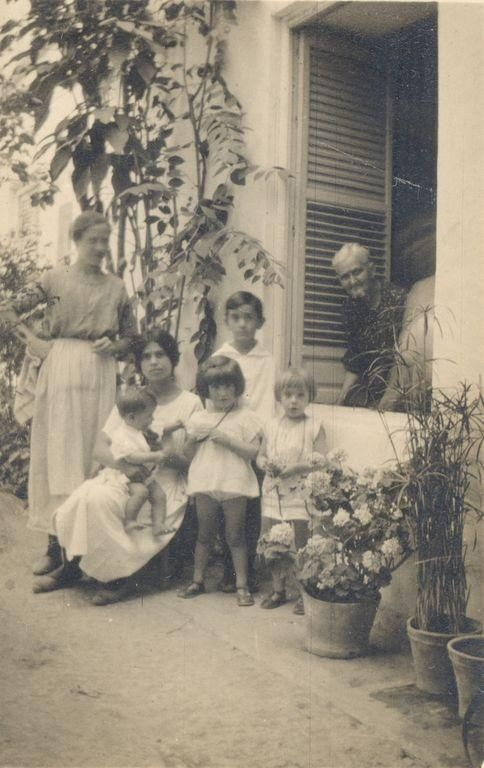
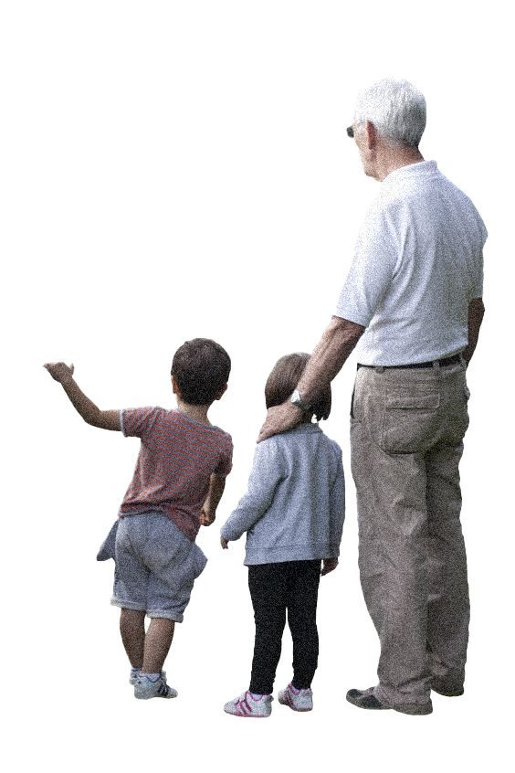

BAJO LA FRESCA
Reinterpreting the UNESCO-recognized Cordoban courtyard tradition of “tomar el fresco” (gathering outdoors to inhale the evening cool). An undulating, scent-diffusing textile canopy carrying gradient-dyed citrus cotton petals that passively cools and repels insects. “How do you highlight beauty without stealing its spotlight?”
Co-designer with Sara Serés Béjar & Özgün Ege Bilgiç. Contextual research, textile tensile canopy geometry, natural dye gradient formulation, structural suspension rigging, and physical fabrication.

The courtyards of Córdoba are far more than private domestic voids; they represent a communal, century-old architectural technology of survival and celebration against the scorching Andalusian climate. Originating in Roman domus and Islamic riad typologies, the patio evolved into a collective courtyard surrounded by family dwellings:
Courtyard doors were first formally opened to neighbors and townspeople for communal gatherings.
The Córdoba City Council established the official *Concurso de Patios*, celebrating architectural and floral care.
The annual spring celebration became institutionalized as a premier Andalusian cultural festival.
Officially inscribed onto the UNESCO Representative List of the Intangible Cultural Heritage of Humanity.

Intergenerational Living Memory
Rafael Garzón Herranz's iconic 1923 photograph in the Municipal Archives of Córdoba captures families gathered under climbing ivy and courtyard window shutters. The patio has always functioned as an outdoor domestic living room where child-rearing, domestic work, and neighborly storytelling coexist.

The Ritual of Evening Cool
Tomar el fresco describes the Spanish custom of dragging chairs outside into courtyards or street thresholds after sunset. As daytime thermal mass dissipates, residents sit together to relax and socialize in the cool air, reaffirming neighborhood bonds through shared atmospheric comfort.
Situated in the Guadalquivir river basin, Córdoba experiences extreme summer temperatures frequently exceeding 40°C to 45°C. With hot, dry Mediterranean heat and scarce rainfall, the traditional patio acts as an organic thermal buffer: whitewashed walls reflect fierce solar radiation, while climbing vegetation, fabric awnings, and water sources create a localized microclimate up to 10°C cooler than the open streets.

PEOPLE
Social refuge; a protected sanctuary where children play and elders find relief from suffocating urban heat.

PLANTS
Cascading ferns, bougainvilleas, and geraniums constantly cool surrounding air through evaporative transpiration.

WATER
Cast-iron hand pumps, central cisterns, and wet stone paving maintain vital ambient humidity throughout hot afternoons.
Patio San Basilio 44, located in the heart of Córdoba's historic Alcázar Viejo neighborhood, is one of the most emblematic communal courtyards of the festival. Its spatial layout features a traditional cobblestone pavement (*empedrado cordobés*), an open whitewashed staircase connecting to the upper gallery, and over 600 hand-painted ceramic pots lining the walls.

Courtyard Core & Stairway
The central axis of San Basilio 44 with its central climbing staircase framed by terracotta-tile risers, bougainvillea clusters, and hanging lanterns.

Shade Awnings & Tiles
Horizontal fabric awnings stretched over ancient clay-tiled eaves provide top-down shade, creating an overhead threshold where convective air currents circulate.

The Blue Pots of San Basilio
Hundreds of vibrant cobalt-blue ceramic pots mounted in vertical arrays against pure white lime plaster, providing individual root pockets for cascading flora.
The central spatial paradox of Patio San Basilio 44: while the desire for vegetative cooling is immense, physical floor and wall space is strictly finite. Our intervention, Bajo La Fresca, resolves this constraint by activating the unused vertical airspace above the courtyard. Rather than competing with existing plants, it suspends an undulating, lightweight textile landscape that extends the garden upwards.

Gradient Colorful Landscape
A parametric color matrix sampled directly from the living ecology of the patio—translating bougainvillea magenta, lemon peel yellow, leaf green, and pot blue into concentric bands of hue that mirror the surrounding botanical canopy.

Airspace as Garden Frontier
By cantilevering and suspending fabric canopies across the courtyard volume, the project introduces a secondary microclimatic layer that filters harsh Andalusian sunlight while releasing natural botanical scents.
The journey from conceptual drawing to physical installation involved testing fabric behavior, structural tension, and pocket construction under real atmospheric conditions:
The First Prototype: Identifying Fragility
Initial tests involved hand-sewing individual flat pockets directly into sheer white textile. While visually promising, this technique proved overly fragile: the pockets lacked dimensional volume, sagged under their own weight, and created an unpolished, unfinished aesthetic when suspended outdoors against the fern wall.


Crafting Waves: Stamped Fabric Pleats
To achieve structural resilience and rhythmic dynamic shadows, we transitioned to a folded pleating logic: stamping and bonding continuous strips of fabric into undulating sinusoidal waves using precision hot adhesive joinery. This gave the canopy architectural rigidity while creating open channels for natural breezes to flow through.


Architecture often prioritizes the visual, but the experience of *tomar el fresco* is fundamentally olfactory—the scent of night-blooming jasmine, damp terracotta, citrus trees, and bougainvillea. We developed an artisanal infusing technique to embed scent directly into the canopy:
Gradient Textile Dyeing
Specialized fabric pigments mixed in vibrant tones of magenta, orange, citron yellow, olive green, and sky blue to replicate the living flowers of the patio.
Frayed Cotton Petals
Raw cotton was dyed and manually frayed to produce soft, tactile, petal-like textures that absorb and slowly release aromatic essential oils over days.
Citrus Peels & Citronella
Infused with real fresh orange and lemon peels alongside natural mosquito-repelling citronella essence, providing pleasant aromatic relief from evening insects.
The finalized installation in Patio San Basilio 44: suspended between whitewashed balcony balustrades, framing the southern sky, and floating over cobblestones as visitors gather below:


Bajo la Fresca is a contextual research and spatial installation realized in Patio San Basilio 44 during the traditional courtyard festivities of Córdoba, Spain. The work explores the socio-climatic tradition of tomar el fresco—an Andalusian custom where neighbors migrate into shaded courtyards and open thresholds at sunset to relax, converse, and bathe in the restorative evening breeze.
In a city where summer temperatures regularly cross 40°C, the courtyard acts as an ecological sanctuary of coexistence: thick whitewashed masonry, evaporative foliage, and shared water wells form a microclimatic oasis. Yet, in these tightly conserved historic spaces, floor and wall surfaces are already saturated with centuries of domestic life. Bajo la Fresca addresses this paradox by activating the courtyard's overhead airspace through a suspended, pleated textile canopy that expands the garden upward without occupying scarce ground.
Crafted from undulating fabric waves bonded with parametric pleats and laden with gradient-dyed cotton petals, the canopy is infused with fresh orange, lemon peels, and natural citronella essences. As hot daytime air gives way to evening breezes, the suspended pouches gently sway, diffusing refreshing citrus notes and natural insect-repelling aromas into the gathered community below. It poses an essential ecological and architectural question: How do you highlight beauty without stealing its spotlight?
Bajo la Fresca, İspanya'nın Córdoba kentinde yer alan tarihi Patio San Basilio 44 avlusunda, kentin geleneksel avlu şenlikleri bağlamında gerçekleştirilmiş bir mekânsal yerleştirme ve bağlamsal araştırmadır. Proje, Endülüs kültürünün köklü bir geleneği olan tomar el fresco (akşam serinliğinde dışarı çıkıp sohbet etme ve dinlenme) ritüelini mekânsal bir deneyime dönüştürür.
Yaz aylarında sıcaklığın 40°C'yi aştığı Córdoba'da tarihi avlular; kireç badanalı kalın taş duvarları, yoğun sarmaşıkları ve kuyularıyla kentin boğucu sıcağına karşı birer mikroklimatik sığınak ve komşuluk vahası işlevi görür. Ancak bu tarihi avlularda saksı ve oturma alanlarının yoğunluğu nedeniyle yeni bitkilendirme için zemin alanı son derece kısıtlıdır. Bajo la Fresca, bu mekânsal kısıtı aşmak için avlunun kullanılmayan hava sahasını askıya alınmış bir kumaş gölgelikle etkinleştirir; bahçeyi zemini işgal etmeden yukarıya doğru genişletir.
Dalgalı kıvrımlarla işlenmiş hafif kumaş şeritlerinden üretilen yerleştirme; avlunun begonvil, narenciye ve seramik renk tonlarını taşıyan degrade boyalı pamuk yapraklarıyla donatılmıştır. Pamuk liflerine emdirilen taze portakal ve limon kabukları ile doğal sivrisinek kovucu esanslar, akşam esintisiyle birlikte avluya yayılarak aşağıda toplanan insanlara ferahlatıcı bir koku peyzajı sunar. Proje, tarihi bir miras dokusu içinde şu temel soruyu araştırır: Güzelliğin rolünü çalmadan onun altını nasıl çizebilirsiniz?